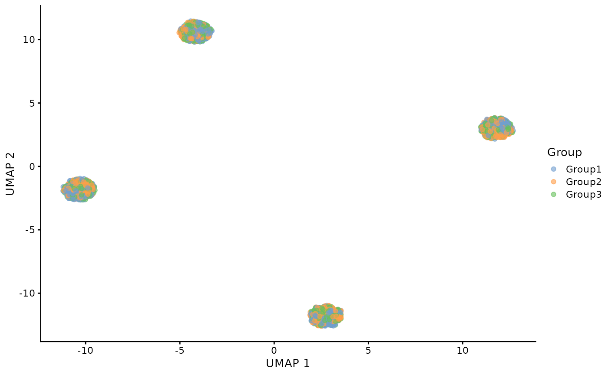

suppressPackageStartupMessages({
library(anglemania)
library(dplyr)
library(Seurat)
library(splatter)
})Create simulated data
batch.facLoc <- 0.4
de.facLoc <- 0.1
nBatches <- 4
nGroups <- 3
nGenes <- 5000
groupCells <- 800
sim <- splatSimulate(
batchCells = rep(300 * nGroups, nBatches),
batch.facLoc = batch.facLoc,
group.prob = rep(1/nGroups, nGroups),
nGenes = nGenes,
batch.facScale = 0.1,
method = "groups",
verbose = FALSE,
out.prob = 0.001,
de.prob = 0.1, # mild
de.facLoc = de.facLoc,
de.facScale = 0.1,
bcv.common = 0.1
)
se <- CreateSeuratObject(counts = counts(sim), meta.data = as.data.frame(colData(sim)))## Warning: Data is of class matrix. Coercing to dgCMatrix.
rm(sim)
se## An object of class Seurat
## 5000 features across 3600 samples within 1 assay
## Active assay: RNA (5000 features, 0 variable features)
## 1 layer present: counts
head(se[[]])## orig.ident nCount_RNA nFeature_RNA Cell Batch Group ExpLibSize
## Cell1 SeuratProject 81008 4004 Cell1 Batch1 Group2 80853.00
## Cell2 SeuratProject 43335 3625 Cell2 Batch1 Group3 43357.87
## Cell3 SeuratProject 61149 3859 Cell3 Batch1 Group2 61126.45
## Cell4 SeuratProject 53996 3763 Cell4 Batch1 Group1 53628.79
## Cell5 SeuratProject 66404 3881 Cell5 Batch1 Group1 65474.87
## Cell6 SeuratProject 57973 3842 Cell6 Batch1 Group3 57751.74unintegrated data
se_unintegrated <- se
suppressWarnings({
se_unintegrated <- se_unintegrated %>%
NormalizeData() %>%
FindVariableFeatures() %>%
ScaleData() %>%
RunPCA() %>%
RunUMAP(dims = 1:30, verbose = FALSE)
})## Normalizing layer: counts## Finding variable features for layer counts## Centering and scaling data matrix## PC_ 1
## Positive: Gene4998, Gene1851, Gene1858, Gene1769, Gene4167, Gene4359, Gene3114, Gene1392, Gene906, Gene2555
## Gene1186, Gene2855, Gene4451, Gene329, Gene2316, Gene2668, Gene1276, Gene1192, Gene946, Gene3822
## Gene35, Gene3183, Gene3668, Gene4055, Gene3778, Gene2967, Gene3604, Gene1666, Gene80, Gene2950
## Negative: Gene1778, Gene4947, Gene3361, Gene2804, Gene3191, Gene3939, Gene3248, Gene2846, Gene4023, Gene2954
## Gene670, Gene1749, Gene1520, Gene2384, Gene543, Gene2777, Gene4148, Gene2684, Gene4012, Gene2408
## Gene4822, Gene805, Gene4522, Gene4760, Gene475, Gene4756, Gene4161, Gene4226, Gene2347, Gene736
## PC_ 2
## Positive: Gene4898, Gene3827, Gene2969, Gene4182, Gene4812, Gene4914, Gene4247, Gene950, Gene811, Gene280
## Gene4844, Gene1746, Gene3652, Gene3144, Gene4773, Gene4852, Gene1929, Gene1021, Gene2554, Gene3403
## Gene1268, Gene254, Gene915, Gene938, Gene2843, Gene4489, Gene709, Gene4074, Gene4667, Gene2103
## Negative: Gene4768, Gene2483, Gene2444, Gene1171, Gene448, Gene575, Gene3564, Gene2433, Gene351, Gene912
## Gene1870, Gene3060, Gene2568, Gene4128, Gene1786, Gene2891, Gene4209, Gene4637, Gene297, Gene2010
## Gene787, Gene492, Gene3687, Gene4718, Gene3262, Gene1657, Gene1493, Gene2031, Gene4101, Gene4740
## PC_ 3
## Positive: Gene267, Gene1099, Gene1610, Gene505, Gene471, Gene4737, Gene4440, Gene4515, Gene4485, Gene3812
## Gene2434, Gene1179, Gene2501, Gene3619, Gene4586, Gene4343, Gene4125, Gene4879, Gene3772, Gene4654
## Gene3567, Gene3889, Gene1562, Gene19, Gene3077, Gene4830, Gene2132, Gene3466, Gene3294, Gene4287
## Negative: Gene463, Gene3025, Gene2894, Gene444, Gene840, Gene95, Gene816, Gene4617, Gene3813, Gene4709
## Gene101, Gene1699, Gene3385, Gene3369, Gene2122, Gene4376, Gene1006, Gene1685, Gene3846, Gene4490
## Gene1590, Gene2521, Gene4858, Gene4463, Gene2239, Gene274, Gene4673, Gene289, Gene3068, Gene3290
## PC_ 4
## Positive: Gene1312, Gene4793, Gene1488, Gene2650, Gene389, Gene1558, Gene1133, Gene793, Gene4895, Gene1582
## Gene4231, Gene4586, Gene1782, Gene3570, Gene471, Gene554, Gene463, Gene2214, Gene1147, Gene2496
## Gene3077, Gene4490, Gene2761, Gene3462, Gene3141, Gene2312, Gene3827, Gene9, Gene533, Gene4890
## Negative: Gene345, Gene361, Gene670, Gene470, Gene4238, Gene4869, Gene2382, Gene4738, Gene4661, Gene816
## Gene645, Gene2552, Gene2521, Gene128, Gene2842, Gene23, Gene4363, Gene4445, Gene2245, Gene1340
## Gene3183, Gene1464, Gene1843, Gene3168, Gene564, Gene1419, Gene280, Gene4215, Gene4205, Gene2573
## PC_ 5
## Positive: Gene816, Gene4403, Gene3168, Gene4299, Gene4969, Gene1651, Gene3618, Gene2512, Gene4616, Gene1419
## Gene4350, Gene777, Gene4388, Gene634, Gene2354, Gene4509, Gene4231, Gene35, Gene3992, Gene2842
## Gene2936, Gene2282, Gene3846, Gene4982, Gene1236, Gene3676, Gene1768, Gene350, Gene2434, Gene1659
## Negative: Gene4586, Gene1851, Gene4797, Gene265, Gene4014, Gene920, Gene4574, Gene3377, Gene3570, Gene3141
## Gene2985, Gene2687, Gene3077, Gene1052, Gene3567, Gene463, Gene584, Gene3328, Gene2860, Gene4407
## Gene3493, Gene3228, Gene1647, Gene1160, Gene337, Gene1312, Gene1921, Gene3462, Gene3564, Gene4065
DimPlot(se_unintegrated, reduction = "umap", group.by = "Batch")
DimPlot(se_unintegrated, reduction = "umap", group.by = "Group")
run anglemania
create anglem object
head(se[[]])## orig.ident nCount_RNA nFeature_RNA Cell Batch Group ExpLibSize
## Cell1 SeuratProject 81008 4004 Cell1 Batch1 Group2 80853.00
## Cell2 SeuratProject 43335 3625 Cell2 Batch1 Group3 43357.87
## Cell3 SeuratProject 61149 3859 Cell3 Batch1 Group2 61126.45
## Cell4 SeuratProject 53996 3763 Cell4 Batch1 Group1 53628.79
## Cell5 SeuratProject 66404 3881 Cell5 Batch1 Group1 65474.87
## Cell6 SeuratProject 57973 3842 Cell6 Batch1 Group3 57751.74
batch_key <- "Batch"
angl <- create_anglemania_object(se,
batch_key = batch_key,
min_cells_per_gene = 1
)## No dataset_key specified.
## Assuming that all samples belong to the same dataset and are separated by batch_key: Batch## Extracting count matrices...## Filtering each batch to at least 1 cells per gene...## Using the intersection of filtered genes from all batches...## Number of genes in intersected set: 4958
angl## anglemania_object
## --------------
## Dataset key: NA
## Batch key: Batch
## Number of datasets: 1
## Total number of batches: 4
## Batches (showing first 5):
## Batch1, Batch2, Batch3, Batch4
## Number of intersected genes: 4958
## Intersected genes (showing first 10):
## Gene1, Gene2, Gene3, Gene4, Gene5, Gene6, Gene7, Gene8, Gene9, Gene10 , ...
## Min cells per gene: 1run anglemania
angl <- anglemania(angl,
zscore_mean_threshold = 2,
zscore_sn_threshold = 2,
max_n_genes = 2000 # optionally define a max number of genes. default is 2000
)## Computing angles and transforming to z-scores...## Computing statistics...## Weighting matrix_list...## Calculating mean...## Calculating sds...## Filtering features...
angl <- select_genes(angl,
zscore_mean_threshold = 2.5,
zscore_sn_threshold = 2.5)
# Inspect the anglemania genes
integration_genes <- get_anglemania_genes(angl)
head(integration_genes)## [1] "Gene816" "Gene4124" "Gene4586" "Gene4679" "Gene1921" "Gene680"
length(integration_genes)## [1] 291integration
- we implemented the easy-to-use integrate_by_features() function from the anglemania package which uses Seurat CCA integration
- you can also just use the anglemania genes for other integration algorithms
# if the Seurat FindIntegrationAnchors() function does not work,
# change this to the specified size:
options(future.globals.maxSize = 4000 * 1024^2)
suppressWarnings({
seurat_integrated_angl <- integrate_by_features(se,
angl,
process = TRUE
)
})## Log normalizing data...## Finding integration anchors...## Integrating samples...## Running PCA with 30 PCs## Running UMAP with 30 PCs and 30 neighbors
seurat_integrated_angl## An object of class Seurat
## 5291 features across 3600 samples within 2 assays
## Active assay: integrated (291 features, 291 variable features)
## 2 layers present: data, scale.data
## 1 other assay present: RNA
## 2 dimensional reductions calculated: pca, umap

Comparison to using HVGs
get HVGs
se_list <- SplitObject(se, split.by = batch_key)
se_list <- lapply(se_list, NormalizeData)## Normalizing layer: counts
## Normalizing layer: counts
## Normalizing layer: counts
## Normalizing layer: counts
# anglemania chose only 291 genes based on the thresholds
# to make it comparable we only choose 300 highly variable genes:
hvg_features <- Seurat::SelectIntegrationFeatures(se_list, nfeatures = 300) ## No variable features found for object1 in the object.list. Running FindVariableFeatures ...## Finding variable features for layer counts## No variable features found for object2 in the object.list. Running FindVariableFeatures ...## Finding variable features for layer counts## No variable features found for object3 in the object.list. Running FindVariableFeatures ...## Finding variable features for layer counts## No variable features found for object4 in the object.list. Running FindVariableFeatures ...## Finding variable features for layer countsintegration
suppressWarnings({
seurat_integrated_hvg <- integrate_seurat_list(se_list,
features = hvg_features,
process = TRUE
)
})## Log normalizing data...## Finding integration anchors...## Integrating samples...## Running PCA with 30 PCs## Running UMAP with 30 PCs and 30 neighbors
seurat_integrated_hvg## An object of class Seurat
## 5300 features across 3600 samples within 2 assays
## Active assay: integrated (300 features, 300 variable features)
## 2 layers present: data, scale.data
## 1 other assay present: RNA
## 2 dimensional reductions calculated: pca, umapplot integration
Seurat::DimPlot(seurat_integrated_hvg, reduction = "umap", group.by = "Batch")
Seurat::DimPlot(seurat_integrated_hvg, reduction = "umap", group.by = "Group")
## R version 4.4.2 (2024-10-31)
## Platform: x86_64-pc-linux-gnu
## Running under: Ubuntu 22.04.5 LTS
##
## Matrix products: default
## BLAS: /usr/lib/x86_64-linux-gnu/openblas-pthread/libblas.so.3
## LAPACK: /usr/lib/x86_64-linux-gnu/openblas-pthread/libopenblasp-r0.3.20.so; LAPACK version 3.10.0
##
## locale:
## [1] LC_CTYPE=C.UTF-8 LC_NUMERIC=C LC_TIME=C.UTF-8
## [4] LC_COLLATE=C.UTF-8 LC_MONETARY=C.UTF-8 LC_MESSAGES=C.UTF-8
## [7] LC_PAPER=C.UTF-8 LC_NAME=C LC_ADDRESS=C
## [10] LC_TELEPHONE=C LC_MEASUREMENT=C.UTF-8 LC_IDENTIFICATION=C
##
## time zone: UTC
## tzcode source: system (glibc)
##
## attached base packages:
## [1] stats4 stats graphics grDevices utils datasets methods
## [8] base
##
## other attached packages:
## [1] splatter_1.30.0 SingleCellExperiment_1.28.1
## [3] SummarizedExperiment_1.36.0 Biobase_2.66.0
## [5] GenomicRanges_1.58.0 GenomeInfoDb_1.42.0
## [7] IRanges_2.40.0 S4Vectors_0.44.0
## [9] BiocGenerics_0.52.0 MatrixGenerics_1.18.0
## [11] matrixStats_1.4.1 Seurat_5.1.0
## [13] SeuratObject_5.0.2 sp_2.1-4
## [15] dplyr_1.1.4 anglemania_0.99.0
##
## loaded via a namespace (and not attached):
## [1] RcppAnnoy_0.0.22 splines_4.4.2 later_1.3.2
## [4] tibble_3.2.1 polyclip_1.10-7 fastDummies_1.7.4
## [7] lifecycle_1.0.4 doParallel_1.0.17 globals_0.16.3
## [10] lattice_0.22-6 MASS_7.3-61 backports_1.5.0
## [13] magrittr_2.0.3 plotly_4.10.4 sass_0.4.9
## [16] rmarkdown_2.29 jquerylib_0.1.4 yaml_2.3.10
## [19] bigparallelr_0.3.2 httpuv_1.6.15 sctransform_0.4.1
## [22] spam_2.11-0 spatstat.sparse_3.1-0 reticulate_1.40.0
## [25] cowplot_1.1.3 pbapply_1.7-2 RColorBrewer_1.1-3
## [28] abind_1.4-8 zlibbioc_1.52.0 Rtsne_0.17
## [31] purrr_1.0.2 bigassertr_0.1.6 GenomeInfoDbData_1.2.13
## [34] ggrepel_0.9.6 irlba_2.3.5.1 listenv_0.9.1
## [37] spatstat.utils_3.1-1 goftest_1.2-3 RSpectra_0.16-2
## [40] spatstat.random_3.3-2 fitdistrplus_1.2-1 parallelly_1.39.0
## [43] pkgdown_2.1.1 leiden_0.4.3.1 codetools_0.2-20
## [46] DelayedArray_0.32.0 tidyselect_1.2.1 UCSC.utils_1.2.0
## [49] farver_2.1.2 bigstatsr_1.6.1 spatstat.explore_3.3-3
## [52] flock_0.7 jsonlite_1.8.9 progressr_0.15.1
## [55] ggridges_0.5.6 survival_3.7-0 iterators_1.0.14
## [58] systemfonts_1.1.0 foreach_1.5.2 tools_4.4.2
## [61] ragg_1.3.3 ica_1.0-3 Rcpp_1.0.13-1
## [64] glue_1.8.0 gridExtra_2.3 SparseArray_1.6.0
## [67] xfun_0.49 withr_3.0.2 fastmap_1.2.0
## [70] fansi_1.0.6 digest_0.6.37 R6_2.5.1
## [73] mime_0.12 textshaping_0.4.0 colorspace_2.1-1
## [76] scattermore_1.2 tensor_1.5 spatstat.data_3.1-4
## [79] utf8_1.2.4 tidyr_1.3.1 generics_0.1.3
## [82] data.table_1.16.2 httr_1.4.7 htmlwidgets_1.6.4
## [85] S4Arrays_1.6.0 uwot_0.2.2 pkgconfig_2.0.3
## [88] gtable_0.3.6 lmtest_0.9-40 XVector_0.46.0
## [91] htmltools_0.5.8.1 dotCall64_1.2 scales_1.3.0
## [94] png_0.1-8 spatstat.univar_3.1-1 knitr_1.49
## [97] reshape2_1.4.4 checkmate_2.3.2 nlme_3.1-166
## [100] cachem_1.1.0 zoo_1.8-12 stringr_1.5.1
## [103] rmio_0.4.0 KernSmooth_2.23-24 parallel_4.4.2
## [106] miniUI_0.1.1.1 desc_1.4.3 pillar_1.9.0
## [109] grid_4.4.2 vctrs_0.6.5 RANN_2.6.2
## [112] promises_1.3.0 ff_4.5.0 xtable_1.8-4
## [115] cluster_2.1.6 evaluate_1.0.1 cli_3.6.3
## [118] locfit_1.5-9.10 compiler_4.4.2 rlang_1.1.4
## [121] crayon_1.5.3 future.apply_1.11.3 labeling_0.4.3
## [124] ps_1.8.1 plyr_1.8.9 fs_1.6.5
## [127] stringi_1.8.4 viridisLite_0.4.2 deldir_2.0-4
## [130] BiocParallel_1.40.0 munsell_0.5.1 lazyeval_0.2.2
## [133] spatstat.geom_3.3-4 Matrix_1.7-1 RcppHNSW_0.6.0
## [136] patchwork_1.3.0 future_1.34.0 ggplot2_3.5.1
## [139] shiny_1.9.1 ROCR_1.0-11 igraph_2.1.1
## [142] bslib_0.8.0 bit_4.5.0